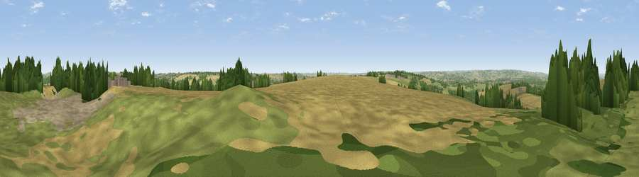

Viewpoint near Little Rollright
#9766 in England · top 20% of its area beats it · near Little RollrightThe view, rendered

A 360° render of this exact spot computed from the terrain model, tree cover and land cover — summer colours, afternoon light, calibrated against photographs of famous viewpoints. Real trees, hedges and buildings will differ in detail.
The panorama
Grey silhouette: terrain skyline in each direction (720 bearings, Earth curvature and refraction included). Dashed green: skyline with trees (+15 m) and buildings (+8 m) as obstacles. Blue strip: how far the ground is visible on each bearing.
Where the view opens
Wedge length = distance to the farthest visible ground on that bearing (vegetation-aware). Rings at 10, 25 and 50 km.
What fills the view
44% cropland · 25% grassland · 20% woodland · 10% bare ground ·
Angular shares of the visible panorama (visual magnitude), not map area. Landscape diversity 0.57 (0–1 Shannon).
Key numbers
More beautiful places nearby
The staircase of upgrades: each row has a higher view potential than everything closer. Driving times are estimates from straight-line distance, calibrated against real road routing — check an actual route before setting out.
| Place | Direction | Drive | Score |
|---|---|---|---|
| Viewpoint near Little Rollright | NNE · 0 km | ~1 min | 64.2 |
| Viewpoint near Little Compton | NNW · 1 km | ~3 min | 67.2 |
| Viewpoint near Upper Brailes | N · 9 km | ~18 min | 68.5 |
| Viewpoint near Upper Tysoe | NNE · 13 km | ~24 min | 70.4 |
| Viewpoint near Ilmington | NNW · 14 km | ~25 min | 72.6 |
| Viewpoint near Chipping Campden | NW · 17 km | ~30 min | 73.3 |
| Viewpoint near Chipping Campden | NW · 17 km | ~30 min | 76.3 |
| Broadway Hill | WNW · 17 km | ~30 min | 77.7 |
51.97205, -1.59418 · source: screening · position refined by local search. Computed location — check access rights before visiting.